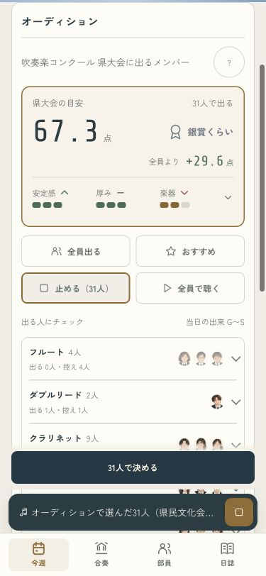
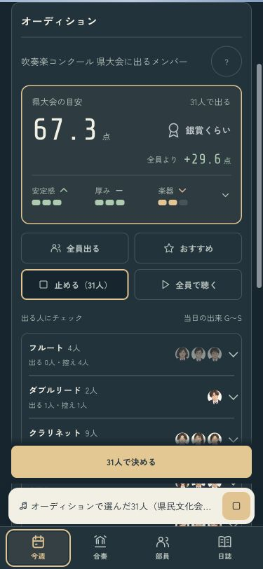
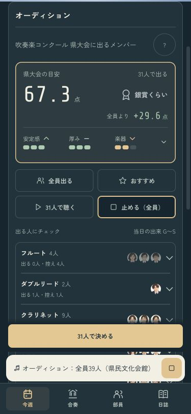
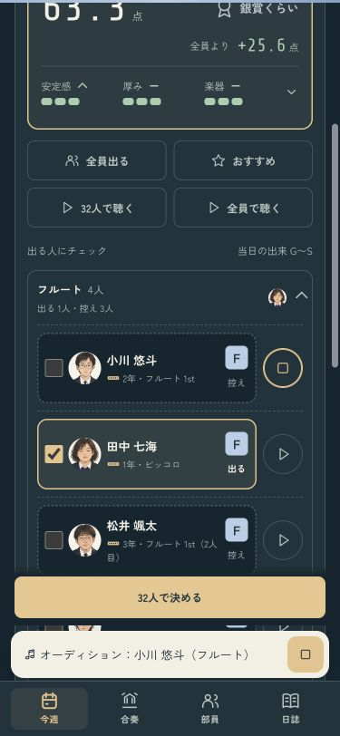
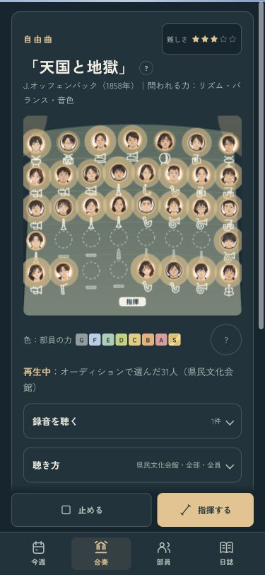

人選を変えずに、音を比べる
選んだ31人と全員39人を、チェックを変えずに聴き比べる。前に聴いた本人だけの指定が残って、一人しか鳴らなかったり無音になったりする不具合も直しました。
人選を試す · 操作の確認記録
人選を変えたら、古い組み合わせの再生と読み込み待ちを止めます。試聴中のボタンは停止の絵へ切り替わり、同じ場所で止められます。
選んだ31人を聴く・ライト
選んだ31人を聴く・ダーク
全員の音・本人の音・舞台
人選31人を保って、全員39人で聴く
その人が吹いたオーディション
舞台も選んだ31人
確認ページは本物のセーブと設定を変更しません。iPhoneへのインストールは成功。端末ロックのため、実機の表示と音は未確認です。